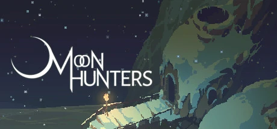

My website on GitHub Pages. It works!
Moon Hunters (Охотники За Луной) — это кооперативная RPG для 1-4 человек.

Действие разворачивается в изменяющемся с каждым прохождением древнем мире. От ваших действий будет зависеть то, каким вас запомнят и какое созвездие назовут в вашу честь!
История начинается с пропажи Луны, игроку предстоит узнать о её судьбе, принимая различные решения в прохождении, в частности в диалогах. Изначально на выбор даётся 4 персонажа на выбор, и лишь одно место для старта , Песчаное племя, но в приключении можно будет разблокировать и других персонажей и мест для старта. На локациях имеются: